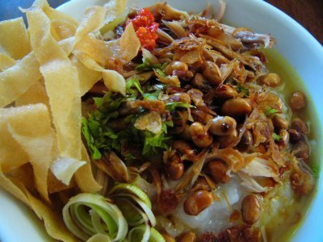

Bubur Ayam ini adalah bubur ayam terenak di salatiga. Bubur ayam ini buka pada saat pasar pagi sampai sekitar pukul 8, lokasinya adalah di depan bioskop lama yang namanya reksa. Harganya juga terjangkau cocok untuk sarapan setelah berolahraga pagi.
